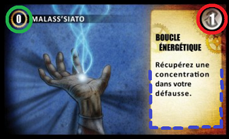

Time masters
Board Game Arena 官方规则文档
Goal of the game:
Time masters is a deck building game, where the deck represents your knowledge. It has three card types: spells, focuses, and timers.
All players start with an identical deck of cards, which has zero knowledge points. During the game you buy cards with knowledge points. When the game ends, the player with the most knowledge points (on their cards) wins.
Cards:
There are three types of cards - timers, spells, and focuses. Spells use Ke when being cast, focuses recover your Ke. You start the game with 4 Ke. Timers are used to delay the execution of your spells.
Example of a card:

Every card has a number in the top left corner (the number circled in green in the example), which tells you, how many points the card is worth and from which sphere of consciousness it can be bought.
Spells also have a number on the top right corner (the number circled in red in the example), which tells you how many Ke it needs to be cast.
The text in the box tells you what happens when the card has been played.
Focuses do not have the number circled in red and allow you to recover some of the Ke.
Timers allow players to postpone spells for use later on (this or next turn).
Phases of a player's turn:
1) Timer phase - this phase occurs only if you have a full timer. You must choose to:
- activate it: in which case the timer and all the cards used to delay it are discarded. The spells on it remain in the Timer area and you must play them until the end of turn.
- delay it: in which case you must place a card from your hand on that timer face down. At the end of the turn, when you replenish your hand cards, you draw as many cards as your hand limit minus the number of cards used to delay your timers. For example: if your hand size is 5 and you have used 2 cards to delay your full timers (in this and previous turns), you refill your hand to 3 cards.
If at the start of your turn you have a timer that is full, and you want to pass the turn to replenish all your Ke, you must place a card on that timer to delay the full timer.
2) Main phase: You may play Spells, Focus or Timers and also Spells that are on active timers.
3) Access spheres Phase
In this phase you buy cards from the different Spheres of Consciousness. The cards you can buy depend on the number of spells you played during your turn - this determines the "access points". The cards go directly into your hand when bought. You can't buy from the same sphere twice during the same turn.
The top card from sphere 1 costs 1 access point, the top card from sphere 2 costs 2 access points, and so on. You can buy more cards during this phase as long as the sum of access points spent does not exceed the number of spells played during your turn.
You can also buy the second card from a sphere of consciousness (hidden card), which costs one more access point. For example, to take the second card from the second level, you must play three spells.
4) Cleanup Phase
Discard all your played spells and replenish your hand to your hand limit (normally 5 cards) - minus the number of cards used to delay your timers.
End of the game:
The game ends when at least 2 of the 5 spheres are empty, or more exactly at the end of turn of the player who draws the card that makes it happen. The players then count the knowledge points of their cards. In case of a tie, the player with the most Ke wins.